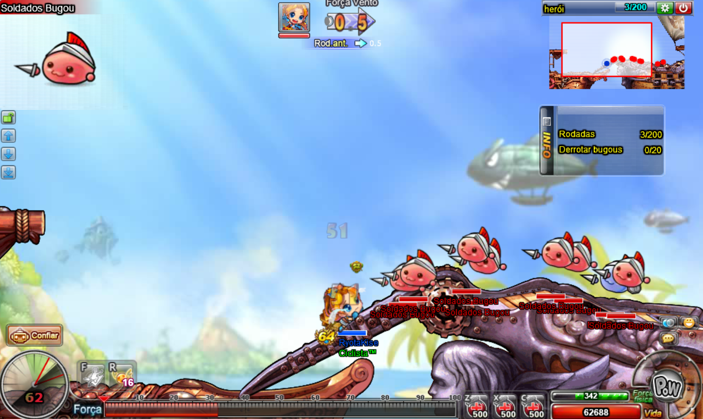
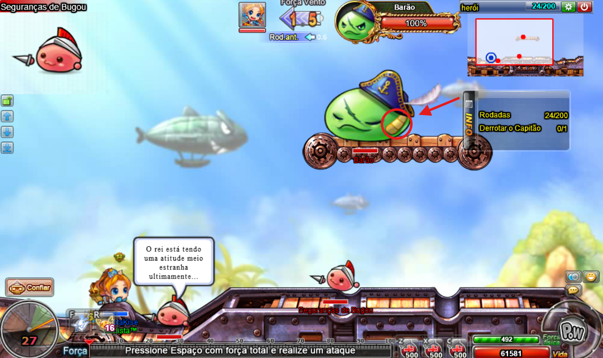
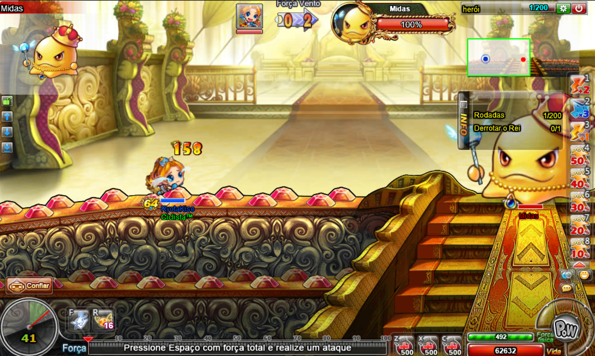
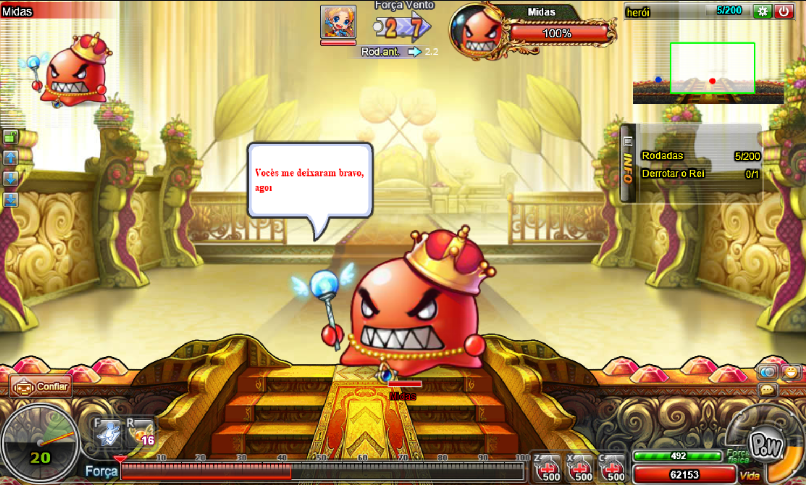
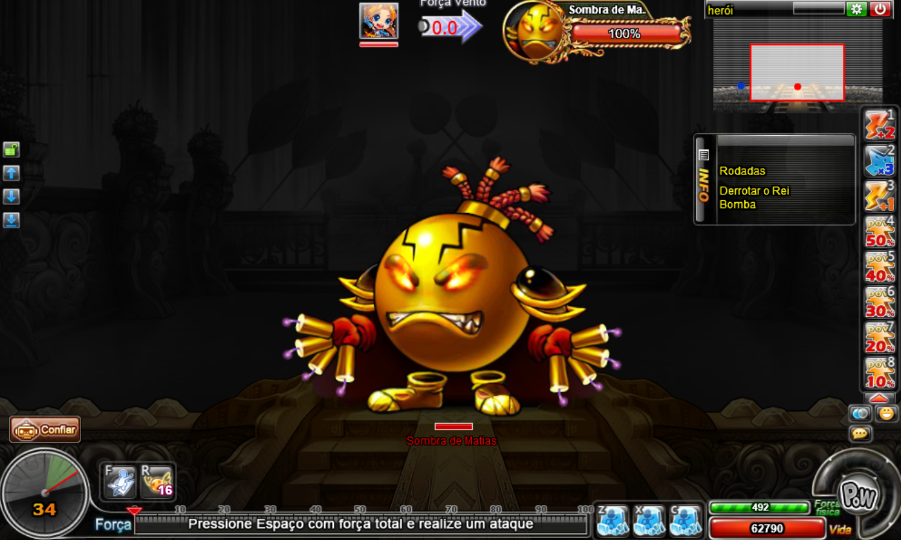

A instância do castelo bugou é uma das mais icônicas do ddtank, nela você enfrenta os "bugous", uma espécie de slimes, passando por toda hierarquia do castelo.
O castelo bugou possue as dificuldades: fácil, normal, difícil e heróica.
Aqui, conforme a dificuldade aumenta, o número de estágios também aumenta, possuindo:
2 estágios na dificuldade fácil;
3 estágios na dificuldade normal;
4 estágios na dificuldade difícil e heróica.

No estágio 1 você enfrentará soldados bugous vermelhos (sem escudo) e azuis (possuem um escudo), derrote-os para avançar ao próximo estágio.

No estágio 2 você enfrentará o barão enquanto ele invoca seus soldados, porém ataques de frente são bloqueados pelo seu escudo, você deverá atacar seu ponto fraco para conseguir causar dano. Derrote o barão para avançar ao próximo estágio.
O mais indicado aqui é passar com 2 ou mais pessoas, estando cada um em uma ponta do mapa. Dessa forma, enquanto ele se protege de um lado, a pessoa do outro lado do mapa fica livre para atacar seu ponto fraco.
No estágio 3 você enfrentará o rei Midas, o qual possue 2 fases:

Na fase 1, o Midas é amarelo e não apresenta muita dificuldade, porém ele utiliza de sua magia para recuperar vida, o que pode ser um pouco chato.

Após derrotar o Midas em sua primeira fase, ele se enfurece e sua cor fica avermelhada. Aqui, seu dano aumenta considerávelmente, porém ele não se cura mais.
CUIDADO!!! Se você estiver passando sozinho, mate o midas antes dele utilizar o gelo, caso ele te congele o próximo ataque que ele utiliza te dará hit kill.

No estágio 4, você enfrentará Mathias, uma verdadeira bomba relógio.
Ao derrotar o Mathias, parabéns! Você completará o castelo bugou em sua maior dificuldade.
Muito cuidado aqui, Mathias invoca pequenas bombas que andam em sua direção e ao alcançar o personagem ela explode, dando hit kill em muitas das vezes.
Os golpes de Mathias são bem chatos de enfrentar, ele possue uma rajada que ataca uma linha horizontal dando muito dano e também utiliza de magia para selar seu personagem, te impossibilitando de utilizar qualquer tipo de item.
Depois de uma certa quantia de rodadas, Mathias começa a carregar seu golpe kamikaze. Nessa hora, você deverá acertar um gelo na parte de cima da sua cabeça, para que ele pare de carregar o golpe. Caso você erre, a morte é inevitável, Mathias se explodirá, varrendo todo o campo de batalha.
Aqui, se você não for muito forte, o recomendado é passar com mais pessoas para não falhar.